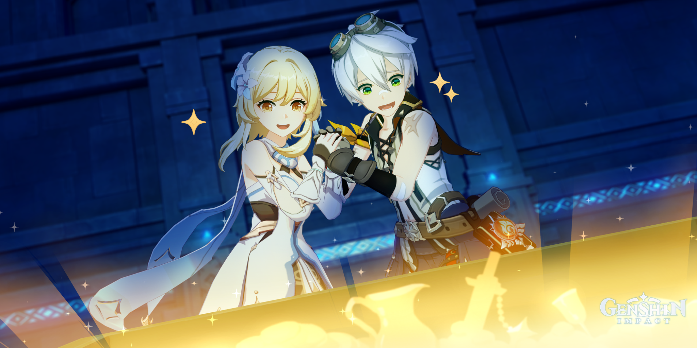

Levantas la mano para detener a Bennett antes de que toque el cofre.
—“Espera. Algo no encaja.”
Observas las grietas del techo.
El mecanismo al lado del cofre tiene una pequeña conexión elemental al suelo.
Las runas no coinciden con las del acertijo anterior.
Bennett entrecierra los ojos.
—“…Así que no era solo mala suerte.”
Ambos inspeccionan cuidadosamente la estructura.
Descubren que el cofre está conectado a una trampa de colapso automático.
Si se abre sin desactivar el mecanismo lateral, el techo cae.
Bennett respira hondo.
—“Entonces… si desactivamos esto primero…”
Siguiendo el patrón correcto del dominio, logran neutralizar el mecanismo.
El brillo rojo desaparece.
Silencio.
Nada explota.
Bennett abre lentamente el cofre.
Dentro hay recompensas reales.
El dominio no colapsa.
No ocurre ningún accidente.
Se queda inmóvil unos segundos.
—“…¿Ganamos?”
Mira a su alrededor.
Nada cae.
Nada explota.
Nada se activa.
Una sonrisa enorme aparece en su rostro.
—“¡GANAMOS!”
Final: “La Aventura Más Afortunada”
Por una vez…
El acertijo fue resuelto
La trampa fue desactivada
El tesoro fue obtenido
Nada salió mal
No fue suerte.
Fue trabajo en equipo.
Bennett no lo dice en voz alta, pero esta vez se siente verdaderamente orgulloso.
